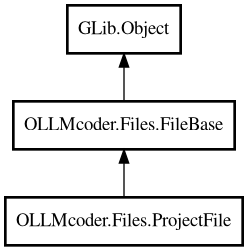

ProjectFile
Object Hierarchy:

Description:
public class ProjectFile :
FileBase
Wrapper around a File object for use in project file lists.
Used for searching on open files and files that need updating. Provides all interfaces of FileBase but overrides display name properties.
Content:
Properties:
- public string display_basename { owned get; }
Display name with basename only - overridden for ProjectFile.
- public string display_relpath { owned get; }
Display relative path from project root. If relpath is set (file
accessed through symlink), use that. Otherwise, calculate from this.path by removing project path prefix.
- public override string display_with_indicators { get; }
Display text with status indicators - overridden for ProjectFile.
- public string display_with_path { owned get; }
Display name with path - shows relative path from project root.
- public File file { get; }
The wrapped File object.
- public bool is_active { get; set; }
Whether the wrapped file is active.
- public bool is_open { get; set; }
Whether the wrapped file is open.
- public bool is_unsaved { get; set; }
Whether the wrapped file has unsaved changes.
- public bool needs_approval { get; set; }
Whether the wrapped file needs approval.
- public Folder project { get; }
The project folder this file belongs to.
- public string relpath { get; set; }
Relative path from project root when file is accessed through a
symlink. If empty (default), the file is not inside a symlink and display_relpath will calculate the path normally.
Creation methods:
Inherited Members:
All known members inherited from class OLLMcoder.Files.FileBase
All known members inherited from class GLib.Object
- @get
- @new
- @ref
- @set
- add_toggle_ref
- add_weak_pointer
- bind_property
- connect
- constructed
- disconnect
- dispose
- dup_data
- dup_qdata
- force_floating
- freeze_notify
- get_class
- get_data
- get_property
- get_qdata
- get_type
- getv
- interface_find_property
- interface_install_property
- interface_list_properties
- is_floating
- new_valist
- new_with_properties
- newv
- notify
- notify_property
- ref_count
- ref_sink
- remove_toggle_ref
- remove_weak_pointer
- replace_data
- replace_qdata
- set_data
- set_data_full
- set_property
- set_qdata
- set_qdata_full
- set_valist
- setv
- steal_data
- steal_qdata
- thaw_notify
- unref
- watch_closure
- weak_ref
- weak_unref